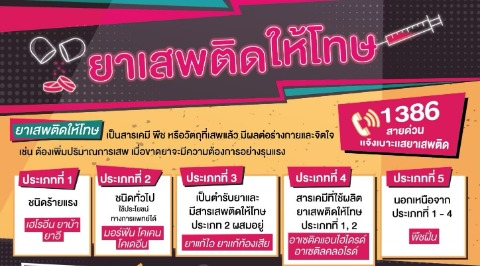
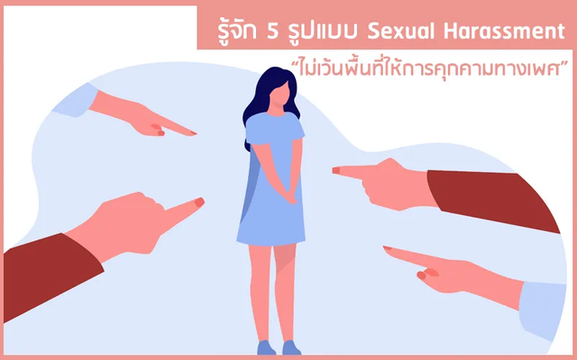

 โทษของยาเสพติด
|

โทษการล่วงละเมิดทางเพศ
| ภัยคุกคาม “Slut Shaming” มีโทษทางอาญา ภัยคุกคามที่เรียกว่า “Slut Shaming” สุ่มเสี่ยงผิดกฎหมายมีโทษทางอาญา ตำรวจไซเบอร์ "กองบัญชาการสืบสวนสอบสวนอาชญากรรมทางเทคโนโลยี" เผยว่า เสรีภาพในการแสดงความคิดเห็นของบุคคลถือเป็นสิทธิขั้นพื้นฐานตามกฎหมายรัฐธรรมนูญที่มีความสำคัญของบุคคลในการแสดงออก แต่ผู้นั้นจะต้องกระทำภายใต้ขอบเขตของกฎหมาย ไม่ไปกระทบสิทธิของบุคคลอื่น ซึ่งหากปราศจากขอบเขตย่อมเกิดความเสียหายต่อประชาชน หรือประเทศชาติ Slut Shaming หรือการประณามหยามเหยียดผู้หญิงที่มีพฤติกรรมทางเพศ หรือจัดการกับร่างกายตนเองต่างจากที่สังคมส่วนใหญ่คาดหวัง ซึ่งถือเป็นรูปแบบหนึ่งของการประณาม และตัดสินบุคคลอื่น โดยบางครั้งบุคคลที่ประณามก็เป็นผู้หญิงด้วยกันเอง ซึ่งความคิดดังกล่าวอาจนำไปสู่ Victim Blaming หรือการโทษหญิงซึ่งเป็นผู้เสียหายว่าตนเองเป็นต้นเหตุของการล่วงละเมิดทางเพศ การกระทำดังกล่าวอาจจะเข้าข่ายความผิดฐาน “หมิ่นประมาทโดยการโฆษณา ตามประมวลกฎหมายอาญา มาตรา 328 มีอัตราโทษจำคุกไม่เกิน 2 ปี และปรับไม่เกิน 200,000 บาท” หรือความผิดฐานอื่น ๆ ที่เกี่ยวข้อง อย่างไรก็ตาม การ Slut Shaming หรือการประณามหยามเหยียดผู้หญิงที่มีพฤติกรรมทางเพศแล้ว ยังมีรูปแบบของการประณาม และการตัดสินบุคคลอื่น เช่น Body Shaming หรือการประณาม วิจารณ์ รูปร่างหน้าตาของบุคคลอื่น Rich Shaming หรือการเสียดสี ประชดประชันบุคคลที่ร่ำรวย หรือการที่ให้ความใส่ใจกับการใช้จ่ายเงินของคนอื่นมากเป็นพิเศษ Toxic Masculinity หรือแนวคิดความเป็นชาย ซึ่งการกระทำหรือพฤติกรรมที่ได้กล่าวมาข้างต้นนั้น ไม่ว่าจะเป็นเพศใดก็ตาม ไม่ควรถูกด้อยค่า ถูกประณาม ดูหมิ่น หรือเหยียดหยามทั้งนั้น นอกจากจะส่งผลเสียต่อบุคคลที่ถูกกระทำ ส่งผลกระทบต่อจิตใจ จนอาจพัฒนากลายเป็นโรคทางด้านจิตเวชแล้ว ยังอาจจะเป็นการกระทำที่ผิดกฎหมายมีโทษทางอาญาอีกด้วย |
โทษการบูลลี่
|